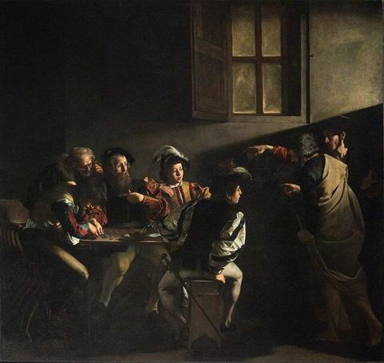

Mirada
12
340

Hoy
Conoce a Velázquez
Barroco
1 de 6Siglo XVII. Luz y sombra, teatro y verdad.

Caravaggio1571–1610

Velázquez1599–1660
SiguienteRembrandt1606–1669
Vermeer1632–1675
Murillo1617–1682
Siglo XVII. Luz y sombra, teatro y verdad.
